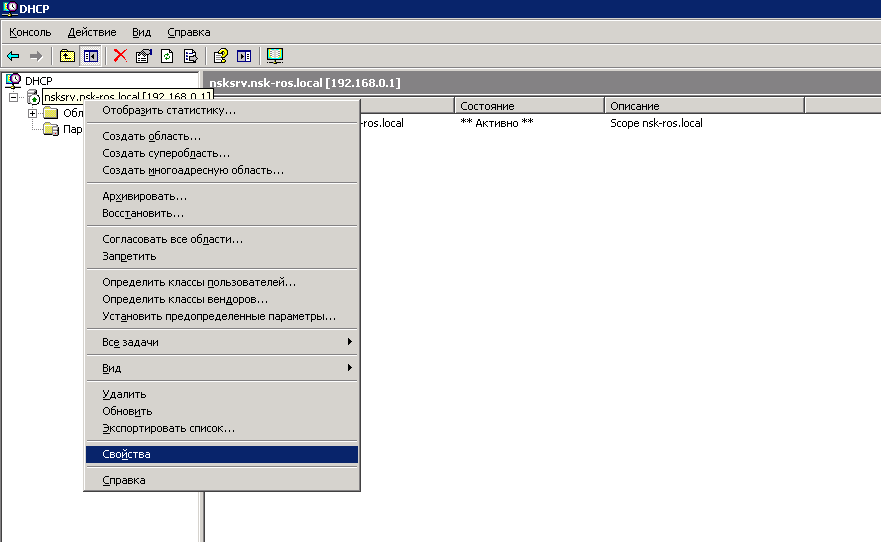
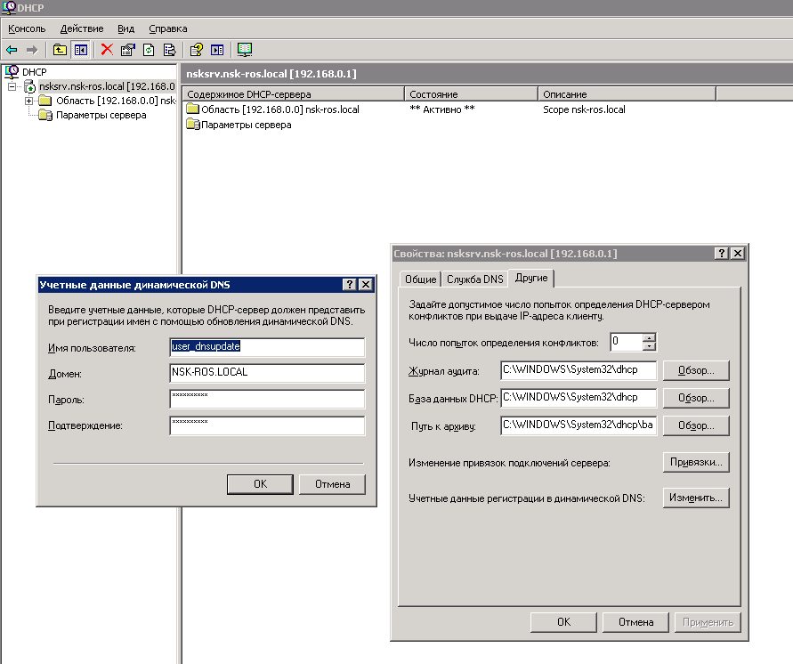
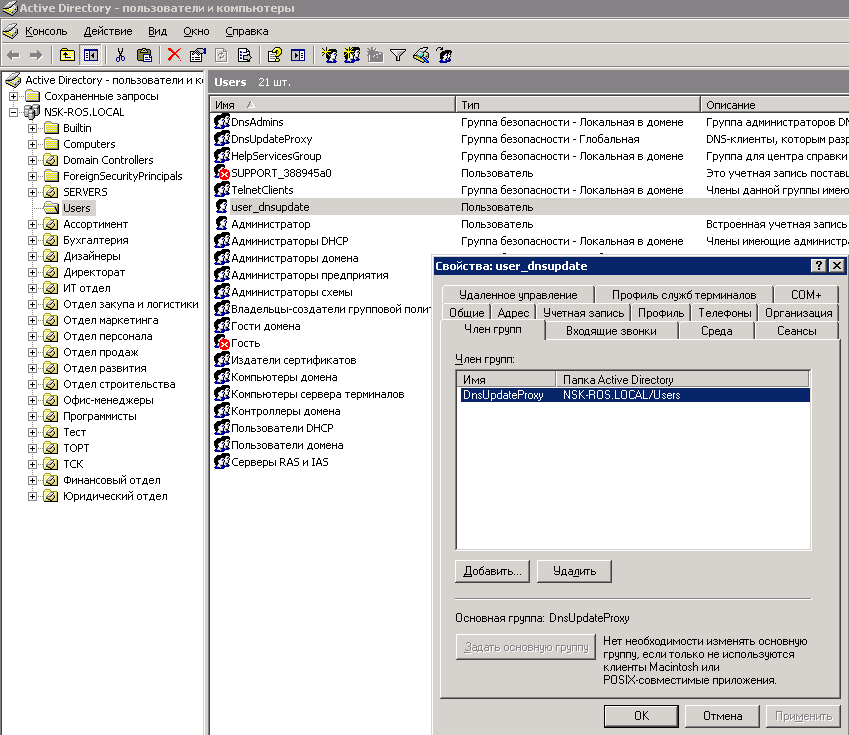

From: Киселев Антон (zerghack007) <zerghack007@mail.ru>
Date: 1 Apr 2008
Subject: Предупреждение 1056.
Тип события: Предупреждение
Источник события: DhcpServer
Категория события: Отсутствует
Код события: 1056
Дата: 23.10.2007
Время: 11:16:23
Пользователь: Н/Д
Компьютер: SRV02
Описание:
Служба DHCP обнаружила, что она запущена на контроллере домена (DC) и не имеет учетных данных, настроенных для использования с динамическими DNS-регистрациями, производимыми службой DHCP. Подобная конфигурация безопасности не рекомендуется. Учетные данные динамических DNS-регистраций можно настроить с помощью утилиты командной строки "netsh dhcp server set dnscredentials" или с помощью программы администрирования DHCP.
Решение:
Это предупреждение можно решить двумя путями:
1. Через командную строку.
2. Через консоль DHCP-сервера.
В любом из этих вариантов первым шагом будет создание учетной записи пользователя от имени которого служба DHCP будет осуществлять динамические DNS-регистрации. Придумываем ей имя и назначаем ей группу.
Назовем ее: user_dnsupdate.
В MS Windows 2003 server R2 есть группа: DnsUpdateProxy
Вот ее описание: DNS-клиенты, которым разрешено выполнять динамическое обновление по запросу других клиентов (например, DHCP-серверов).
Включим пользователя user_dnsupdate в эту группу и назначим эту группу в качестве основной (из остальных групп я думаю его можно исключить).

Чтобы назначить пользователя от имени которого служба DHCP будет осуществлять динамические DNS-регистрации надо:
Теперь первый способ (через командную строку).
1. Открыть cmd.
2. Написать netsh dhcp server set dnscredentials user_dnsupdate nsk-ros.local p@ssword.
Если все прошло удачно вылезет надпись: Команда успешно завершена.
На всякий случай приведу описание этой утилики.
N:\>netsh dhcp server set dnscredentials /?
Устанавливает учетные данные, используемые для всех динамических
обновлений DNS.
Синтаксис:
set dnscredentials Пользователь Домен Пароль
Параметры:
Пользователь - Имя пользователя, используемое при динамическом
обновлении DNS
Домен - Домен, которому принадлежит эта учетная запись.
Пароль - Пароль, используемый для этой учетной записи.
Примечание: Эта команда используется только серверами Windows 2000
и Windows Server 2003.
Примеры: set dnscredentials MyUserName MyDomain MyPassWord
set dnscredentials MyUserName MyDomain *
Команда первого примера устанавливает учетные данные DNS
в соответствии с заданными значениями.
Команда второго примера делает то же самое,
но из соображений безопасности пароль будет запрашиваться явно.
Второй способ (через консоль DHCP-сервера)
1. Пуск -> прграммы -> администрирование -> DHCP

2. Щелкаем правой кнопкой на нужной области -> свойства -> вкладка другие -> находим надпись учетные данные регистрации в динамической DNS и нажимаем кнопку изменить и вводим наши данные.

Теперь перезапускаем службу DHCP.
Вуаля нет предупреждения!)
Если после прочтения статьи есть какие-то замечания или поправки или вопросы прошу писать на e-mail: zerghack007@mail.ru